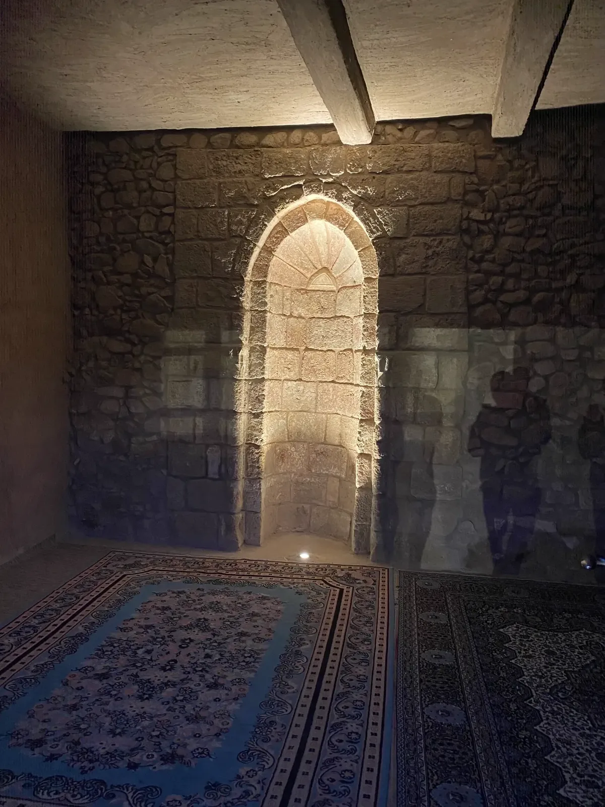

Aqaba: A Historical Gem on the Red Sea
Located at the northern tip of the Red Sea, Aqaba has a history that stretches back thousands of years. This strategic port city has been a hub for trade and culture, playing a crucial role in connecting various civilizations.

Ancient Trade Routes
Aqaba's history as a trading port dates back to the time of the Nabateans, who skillfully navigated trade routes that connected the Arabian Peninsula to the Mediterranean. The city's location made it an ideal spot for the exchange of goods, including spices, textiles, and precious metals.
Historical Landmarks
- Fort of Aqaba: Built in the 16th century, this fort stands as a testament to the city's historical significance and architectural heritage.
- Aqaba Archaeological Museum: Showcasing artifacts from various periods, the museum offers insights into the city's rich past.
- Church of the 6th Century: An ancient church located in the nearby area, illustrating early Christian influence in the region.
Today, visitors can explore these historical landmarks and immerse themselves in the captivating story of Aqaba, where the past and present beautifully intertwine.
Back to Blog